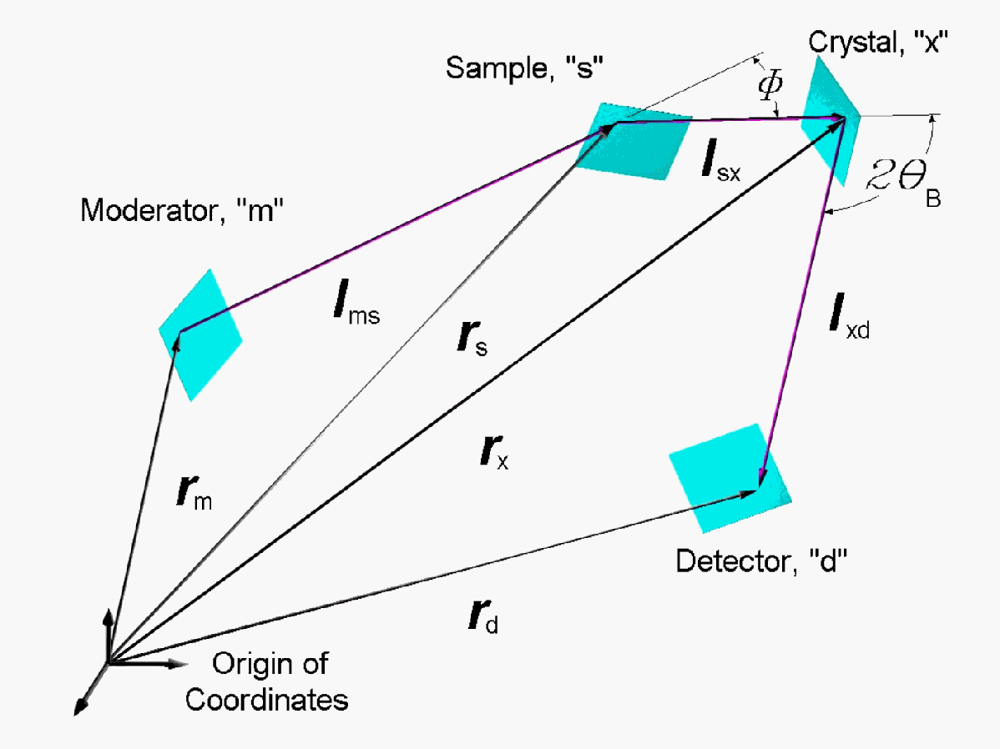

This tool calculates geometric details of a schematic crystal analyser
spectrometer following the theory in
J. M. Carpenter et al in NIMPR A483 (2002) 784-806. This tool can be used
to obtain the input parameters for a complete VITESS simulation.
Notes:
All Versions 4.x work with uniform mosaicity, elastic scattering, uniform
wavelength, delta functionand time from moderator.
Proposes in log file R_X and R_D after zeta rotation around W vector
X+ shows in beam direction, Y+ is horizontal left, Z+ vertical up
Framework of moderator, sample, analyzer, detector means a coordinate system
where the element is perpendicular to X+
Version 4.0 includes the 1st order SD calculations.
For more details see the publication mentioned above.
Command options:
-------------------------
--Z "random seed" (default: 1)
--L "log filename"(default: CAS_log60arm10.dat)
-P "Parameter filename" (default: CAS_par60arm10.dat)
-S "Statistics filename" (default: CAS_S60arm10.dat)
-T "Trajectory data filename" (default: CAS_D60arm10.dat)
-l "lambda medium" (default: 6.174745)
-w "lambda range" (default: 0.03)
-k "zeta" (default: 0.0)
Thus the generated command will be for example:
L:\SRC\Release\CAS_v40.exe --Z2 --LCAS_log60arm10.dat -PCAS_par60arm10.dat
-SCAS_S60arm10.dat -TCAS_D60arm10.dat -l6.174745 -w0.03 -k0
The input & output files are found in the "Parameter Directory".
Example for the log file:
-------------------------------
VITESS version 2.4 module CAS simulation version 4.0
After J.M.Carpenter et al, NIMPR A483 (2002) 784-806.
Units: cm, ms, Angstroem, deg if not otherwise given.
*** INPUT: ***
* No. trajectories, main wavelength, wavelength band, zeta:
trajectories: 10000
lambda: 6.174745
widthlambda: 0.030000
zeta:
0.000000 (if |zeta|>0 : see output VI.)
* R_M, R_S, R_X, R_D, sizes, orientations:
parameter file: CAS_par60arm10x10cm.dat (see below)
*** OUTPUT: ***
* I. CAS distance vectors:
L_1_vect: 5000.000000
0.000000 0.000000
L_1 = 5000.000000
L_2_vect: 99.999990
172.825666 11.458238
L_2 = 200.000000
L_3_vect: -71.592973
-149.689756 -69.766920
L_3 = 180.000000
L_1_vect_unit: 1.000000
0.000000 0.000000
L_2_vect_unit: 0.500000
0.864128 0.057291
L_3_vect_unit: -0.397739 -0.831610
-0.387594
Euler_L1_aroundZ, Euler_L1_aroundY:
0.000000 0.000000
Euler_L2_aroundZ, Euler_L2_aroundY: 59.945566
3.284342
Euler_L3_aroundZ, Euler_L3_aroundY: -115.560657
-22.804874
* II. Main scattering angle, Bragg angle, wavelength, tof:
Phi:
60.000003
thetaB_0: 80.000000
lambda_0: 6.174745
tof_0: 83.973295
* III. Analytic first order delta-square terms:
n_M:
1.000000 0.000000
0.000000
n_S:
0.362155 -0.362155
-0.858887
n_X:
0.480705 0.865898
0.138363
n_D:
-0.486228 -0.521044
0.701495
xi_M:
180.000000
xi_S:
0.000001
xi_X:
0.000000
xi_D:
0.000000
area_moment_M: 0.000000e+000
area_moment_S: 1.182921e-013
area_moment_X: 4.653020e-014
area_moment_D: 4.137206e-014
F_M_unit:
-1.000000 0.000000
0.000000 F_M_abs = 1.560842e-002
F_S_unit:
0.362155 -0.362155
-0.858887 F_S_abs = 4.309868e-002
F_X_unit:
0.480705 0.865898
0.138363 F_X_abs = 4.449737e-002
F_D_unit:
-0.486228 -0.521044
0.701495 F_D_abs = 4.399193e-002
P_M_unit:
0.000000 0.000000
0.000000 P_M_abs = 0.000000e+000
P_S_unit:
-0.816486 -0.567761
-0.104876 P_S_abs = 1.191430e-008
P_X_unit:
-0.354425 0.336187
-0.872560 P_X_abs = 7.472365e-009
P_D_unit:
0.159074 -0.842145
-0.515255 P_D_abs = 7.046025e-009
S_M_unit:
0.000000 0.000000
0.000000 S_M_abs = 0.000000e+000
S_S_unit:
-0.449661 0.739250
-0.501312 S_S_abs = 1.191430e-008
S_X_unit:
-0.802064 0.370405
0.468502 S_X_abs = 7.472365e-009
S_D_unit:
0.859231 -0.138942
0.492359 S_D_abs = 7.046025e-009
sigma_M_th: 0.000000e+000
sigma_S_th: 1.482320e-009
sigma_X_th: 9.598465e-010
sigma_D_th: 8.948012e-010
* IV. Variables and the focusing conditions:
U_vect: -0.072108
0.019595 0.333758
U_abs = 0.342020
V_vect: 0.072108
0.124620 0.008262
V_abs = 0.144215
W_vect: 0.000000
0.144215 0.342020
W_abs = 0.371182
Z_vect: 0.144215
-0.144215 -0.342020
Z_abs = 0.398213
psi:
1.171761 rad
chi:
90.000000
alpha:
0.144215 [-]
Phi_M_foc: 0.000000
Phi_S_foc: 46.899462
Phi_X_foc: 5.222745
Phi_D_foc: 69.218698
Normal_M_foc: 1.000000
0.000000 0.000000
Normal_S_foc: 0.362155
-0.362155 -0.858887
Normal_X_foc: 0.480705
0.865898 0.138363 (paper:
*(-1))
Normal_D_foc: -0.486228
-0.521044 0.701495
q_B_0_vect : 0.455794
0.860949 0.225874 (paper:
*(-1))
Euler_M_aroundZ_foc, Euler_M_aroundY_foc:
0.000000 0.000000
Euler_S_aroundZ_foc, Euler_S_aroundY_foc: -45.000000
-59.191846
Euler_X_aroundZ_foc, Euler_X_aroundY_foc:
60.963075 7.953105
Euler_D_aroundZ_foc, Euler_D_aroundY_foc: -133.020338
44.547082
Euler_q_B_0_aroundZ, Euler_q_B_0_aroundY:
62.102861 13.054286
* V. Output files :
statistics data: S60arm10x10cmtest.dat
trajectory data: D60arm10x10cmtest.dat
SD_MC: 6.712094e-003 SD_1st_MC(sum): 1.991579e-009
SD_1st_th(sum): 1.979709e-009
*** Parameter file CAS_par60arm10x10cm.dat ***
3.135
: d_spacing
0 0
0 : R_M[0] R_M[1] R_M[2]
5000 0
0 : R_S[0] R_S[1] R_S[2]
5099.999990 172.825666
11.458238 : R_X[0] R_X[1] R_X[2]
5028.407017 23.135910
-58.308682 : R_D[0] R_D[1] R_D[2]
10 10
: Height_M Width_M
10 10
: Height_S Width_S
10 10
: Height_X Width_X
10 10
: Height_D Width_D
0 0
: Euler_M_aroundZ Euler_M_aroundY
-45 -59.191847
: Euler_S_aroundZ Euler_S_aroundY
60.963075 7.953105
: Euler_X_aroundZ Euler_X_aroundY
-133.020338 44.547082
: Euler_D_aroundZ Euler_D_aroundY
21.01.2004
15:09
Back to VITESS overview
vitess@fz-juelich.de
Last modified:Thu Jan 29 17:05:37 MET 2004, G.Zs.